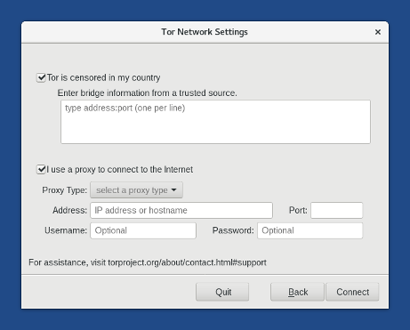
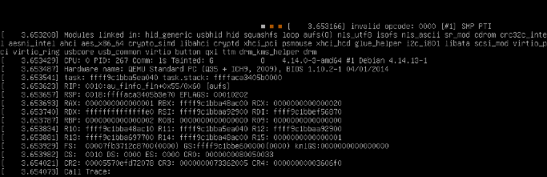

This release fixes many security issues and users should upgrade as soon as possible.
Änderungen
Neue Funktionen
Tor redesigned Tor Launcher, the application to configure a Tor bridge or a local proxy.

Aktualisierungen und Änderungen
Update Tor Browser to 7.5.
Update Linux to 4.14.13 and the microcode firmware for AMD to mitigate Spectre.
Update Thunderbird to 52.5.
Behobene Probleme
Fix the opening of the Applications menu when the time synchronization changed the clock in the past. (#14250)
Fix the opening of the documentation included in Tails for many non-English languages. (#15160)
Fix translations of the time synchronization and "Tor is ready" notifications. (#13437)
Remove the code to migrate from Claws Mail that was preventing Thunderbird to start in some cases. (#12734)
Lesen Sie für mehr Details unser Änderungsprotokoll.
Bekannte Probleme
Debug and error messages appear when starting Tails, including an alarming message about a kernel BUG.
These messages do not affect the safety of Tails.

In Tails Installer, it is only possible to select an ISO image when choose Use a downloaded Tails ISO image when running Tails in English. For other language, the file chooser button remains inactive:

The documentation shipped in Tails doesn't open in Tor Browser anymore. The warning page of the Unsafe Browser also lacks graphical design. (#14962 and Tor #24243)
Lesen Sie sich die Liste der längerfristig bekannten Probleme durch.
Get Tails 3.5
Befolgen Sie zum Installieren unsere Installationsanweisungen.
To upgrade, automatic upgrades are available from 3.3 and 3.4 to 3.5.
Falls Sie keine automatische Aktualisierung durchführen können oder das Starten nach einer automatischen Aktualisierung fehlschlägt, versuchen Sie bitte eine manuelle Aktualisierung.
Was kommt als Nächstes?
Tails 3.6 is scheduled for March 13.
Werfen Sie einen Blick auf die Roadmap, um zu sehen, was wir als Nächstes vorhaben.
We need your help and there are many ways to contribute to Tails (donating is only one of them). Come talk to us!